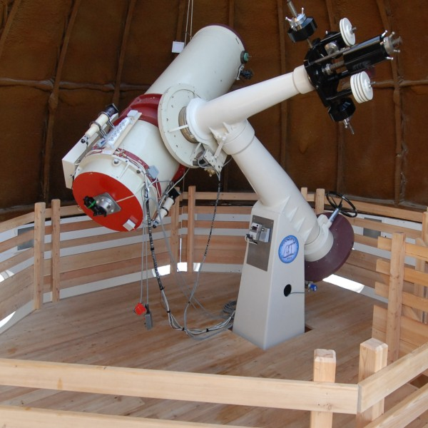
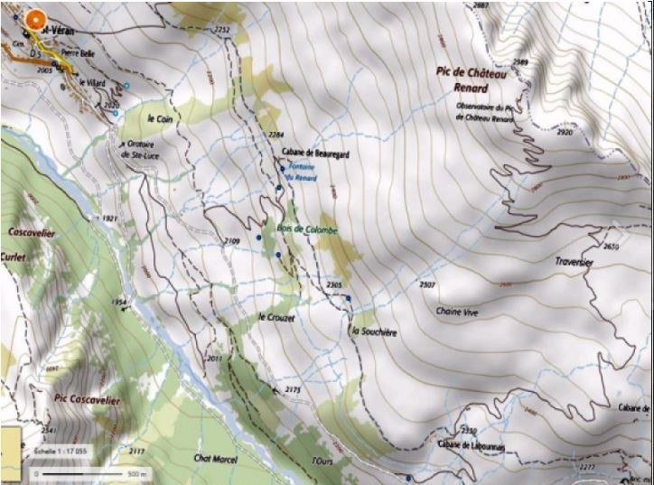
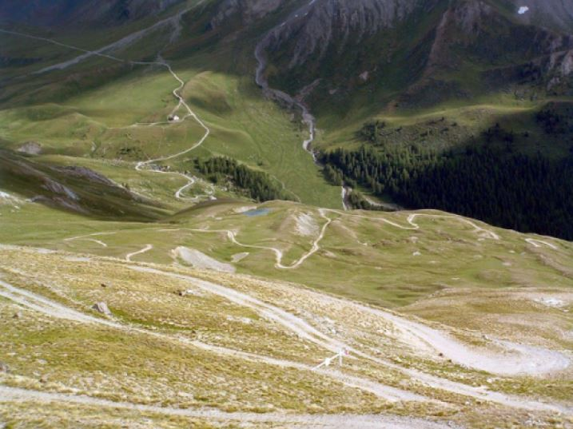
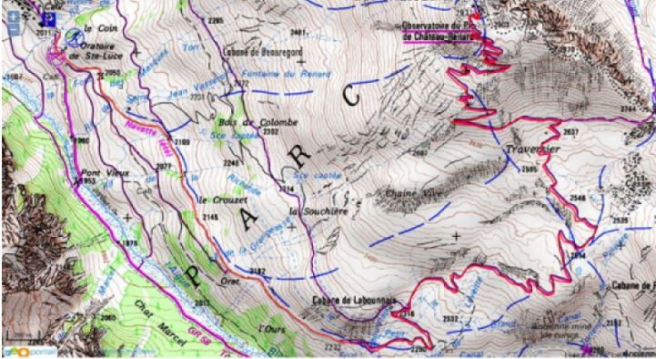
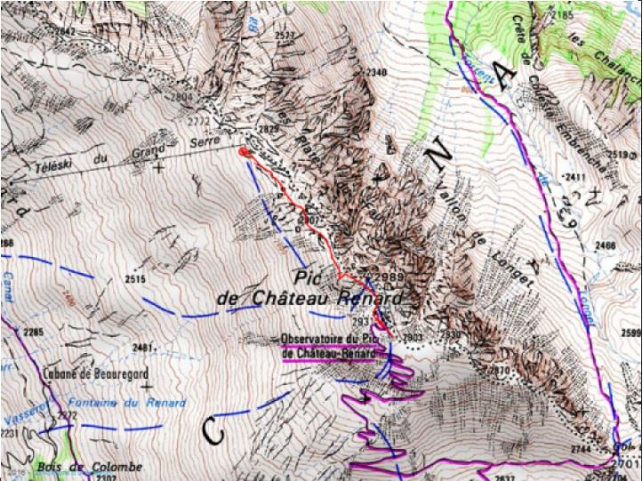

L’Observatoire de Saint-Véran - Paul Felenbok est situé au cœur du Parc Naturel Régional du Queyras. Pour toutes les questions d’environnement, il est donc soumis à la réglementation des Parcs Naturels Régionaux. La cueillette des fleurs, le ramassage de minéraux, la marche en dehors des sentiers… sont interdits.
L’accès se fait exclusivement à pied. Plusieurs itinéraires peuvent être empruntés au départ de Saint-Véran ou du Pont de Lariane (commune de Molines-en-Queyras). Quelques exemples vous sont présentés, les antennes locales de l'Office de Tourisme du Queyras peuvent vous donner des informations complémentaires, les itinéraires figurent sur la carte de randonnée Top 25 3637 OT de l'IGN.
IMPORTANT: la circulation automobile dans le village et sur la route de Clausis est réglementée par arrêté municipal. Elle est interdite en juillet et août sauf aux ayants droit. Vous devrez stationner votre véhicule à l'entrée du village selon les indications qui vous seront données au poste d'accueil communal.
À partir de la barrière Sainte-Luce (sortie Est de Saint-Véran), prendre la route de la Chapelle de Clausis. Après environ 3 km, soit une heure à pieds, la piste de l’Observatoire se trouve à gauche. Il restera environ 2 h 30 de marche. En juillet et août, il est possible de réduire le temps de trajet en emprenant la navette au départ de la barrière et en demandant au chauffeur de s'arrêter à la bifurcation de l'Observatoire, il restera alors 2 h 30 d'ascension.
Similaire à l’itinéraire 1 mais longeant le torrent Aigue-Blanche pour la première partie. Rejoindre l’Aigue-Blanche par le sentier à droite à la barrière Sainte-Luce. Après environ 3 km, aller vers la chapelle Sainte-Élisabeth, non loin du départ de la piste de l’Observatoire. Il restera alors environ 2 h 30 de marche.
Quitter Saint-Véran vers les remontées mécaniques (en direction de la "Maison du Soleil") et passer au-dessus de l’hôtel Alta-Peyra. Suivre l’itinéraire fléché « Grand Canal ». Après environ 3 km, à hauteur d’une cabane de berger, le Grand Canal croise la piste de l’Observatoire. Suivre alors la piste, il restera environ 2 h de marche..
Quitter Saint-Véran au niveau de la Maison du Soleil. Rejoindre la chapelle. Emprunter le sentier parallèle au télésiège "Cassettes" jusqu'à l'arrivée de cette remontée mécanique. Longer ensuite les crêtes jusqu'à l'Observatoire. Cet itinéraire balisé est environ deux fois plus court que les précédents, le dénivelé est franchi plus rapidement, une certaine habitude de la randonnée en montagne est recommandée.
Nécessite une voiture. Aller jusqu’au parking du pont de Lariane (route du Col Agnel). Prendre la direction du col Longet. Du col Longet, rejoindre la piste de l’Observatoire. Environ 3 h de marche pour cet itinéraire.
L'accès à l'Observatoire est facilité lorsque la couverture neigeuse est suffisante. De nombreux skieurs de randonnée sillonnent les itinéraires d'accès à l'Observatoire, notamment celui utilisant les remontées mécaniques de la station de ski de Molines-Saint-Véran. La trace est le plus souvent bien visible entre le sommet du téléski du Grand Serre et l'Observatoire. L'utilisation de raquettes à neige constitue une bonne alternative à celle des skis mais présente un caractère plus sportif.
Pour les informations et recommandations concernant plus particulièrement l'accès hivernal, consulter la page hiver.